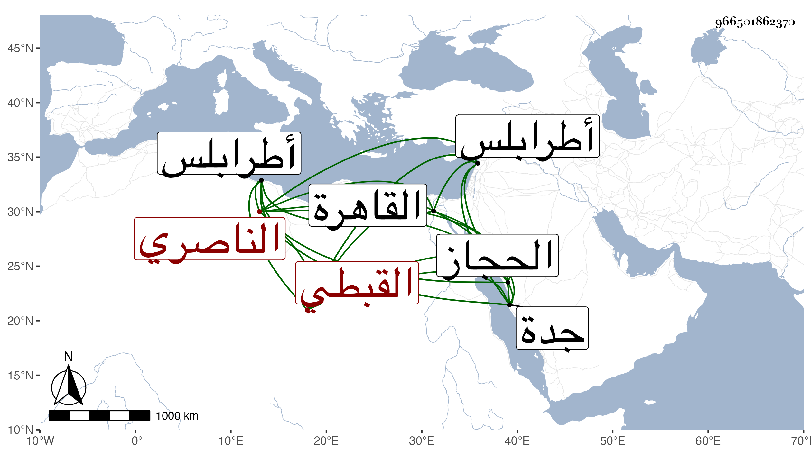

0902Sakhawi.DawLamic.ITO20230111-ara1.EIS1600.966501862370
Biography ID: 966501862370
إبراهيم سعد الدين القبطي الناصري ويعرف بابن المرة كان خدم في جهات وولي نظر الديوان المفرد في الأيام الأشرفية برسباي ثم صرف وولي نظر بندر جدة وحصل منها ثروة زائدة ودام فيه مدة واشتهر به وعد في الرؤساء بعد أن كان يخدم في دواوين الأمراء كأركماش الجلباني ناظر طرابلس وكان يحكي أنه ضبط المتحصل من مكس القطن الموسوق للفرنج بميناء طرابلس في بعض السنين فجاء نحو ثلاثين ألف دينار وذلك شيء غريب واتصل في رياسته بالتزوج بأم الزيني بن مزهر في صغره وكان كريما بل مسرفا محبا في الفخر مذكورا ببر وخير في الجملة بحيث أنه جدد جامع جدة بل وجعل على جل المراكب شيئا يؤخذ منهم في كل سنة لمصالحه وكان هذا من حسناته . وأورد له شيخنا في أنبائه أنه صالح العرب في قضية اتفقت له في طريق الحجاز بمائة دينار أو أكثر وآل أمره إلى أن تعطل وخمل وافتقر بحيث احتاج إلى سؤال الناس حتى مات وقد قارب السبعين بالقاهرة في يوم الخميس عاشر ربيع الآخر سنة أربع وأربعين وتصدق عليه بالكفن وذكره المقريزي باختصار جدا .
